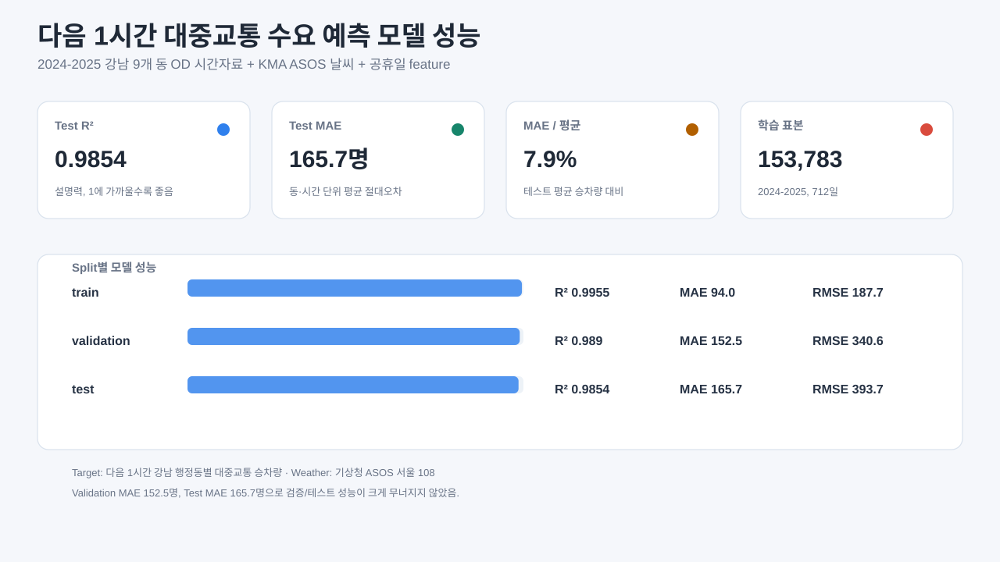
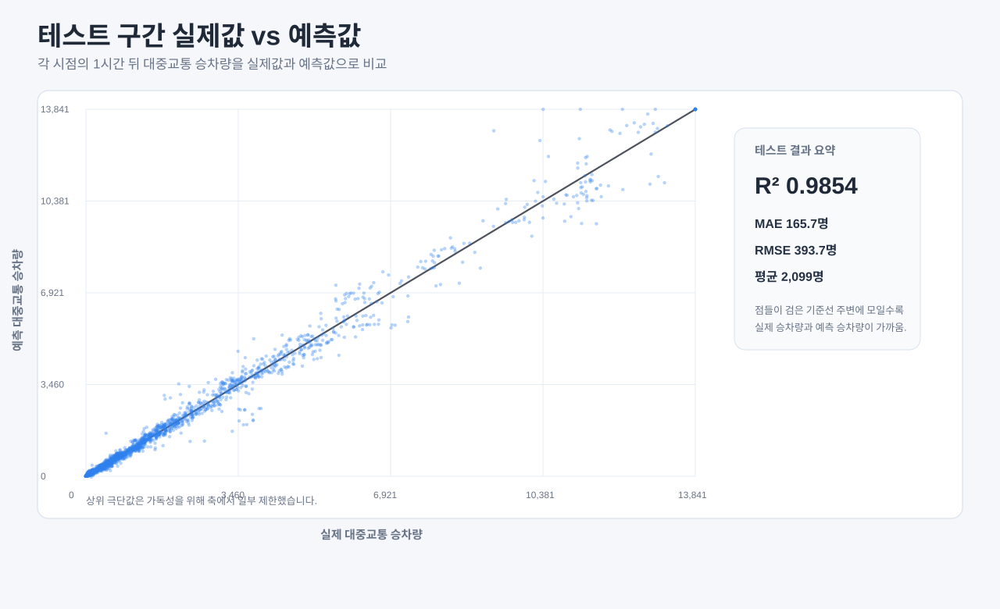
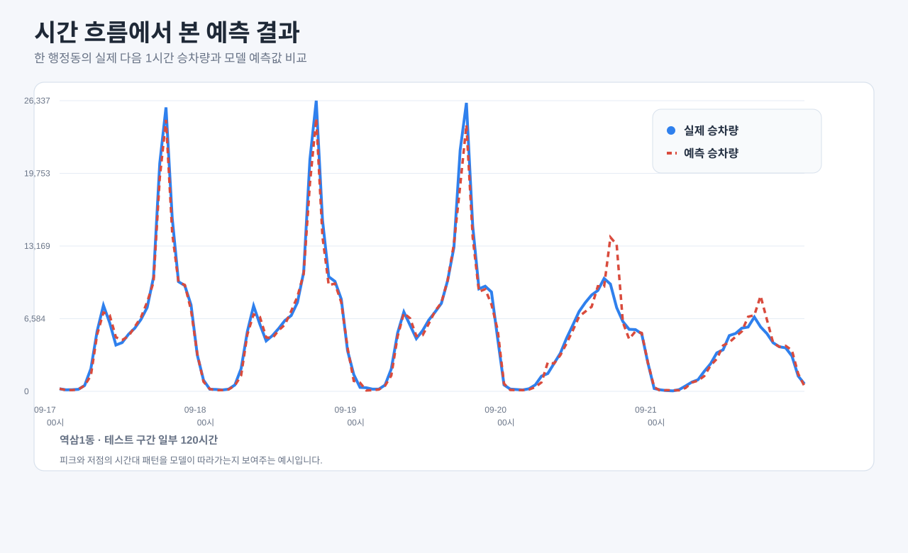
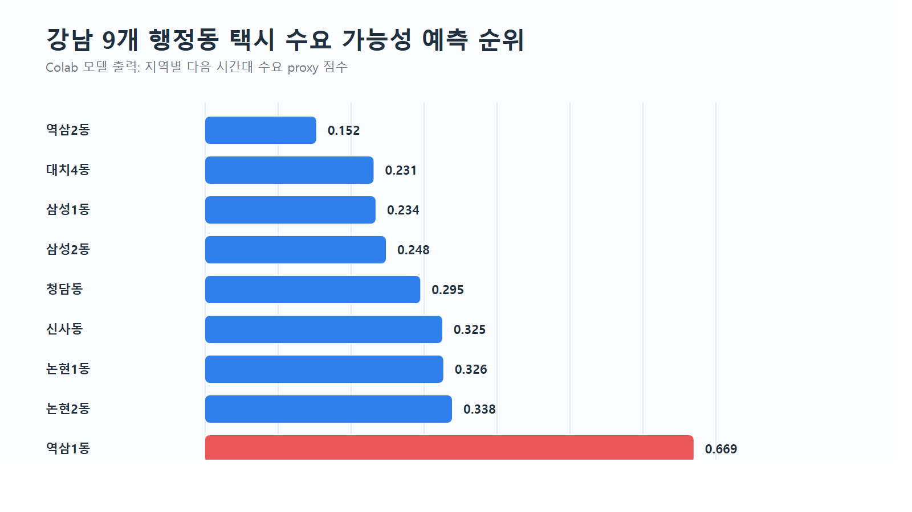
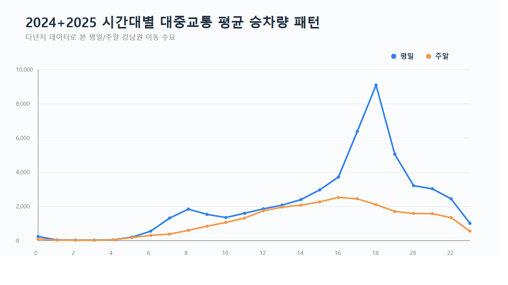
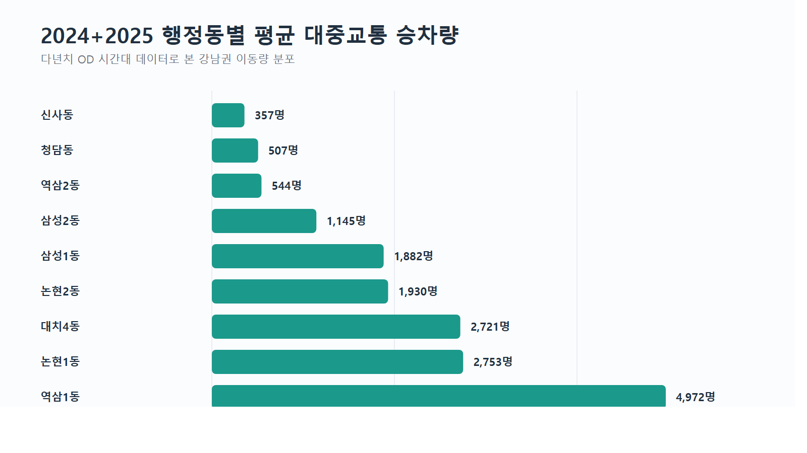
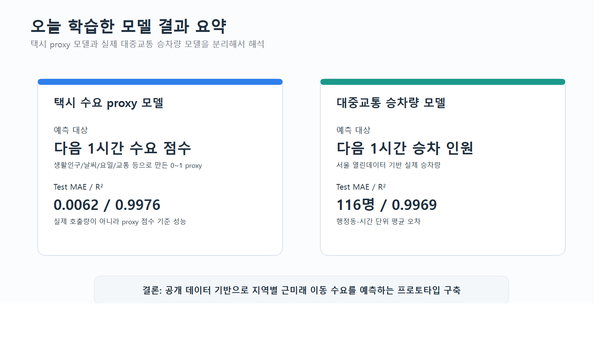
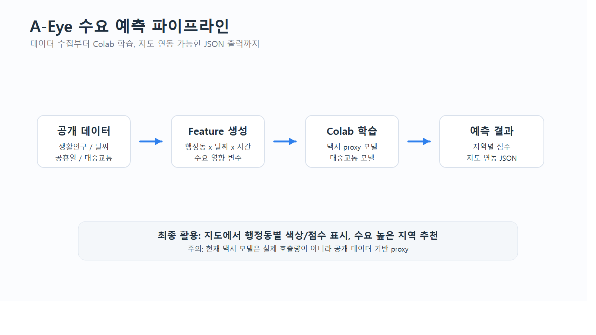

PPT에는 SVG 또는 PNG 파일을 넣는 것을 추천합니다. 현재 대중교통 결합 데이터는 서울시 행정동 OD 대중교통 자료와 기상청 ASOS 서울 지점(108) 시간자료, 공휴일 정보를 결합한 것입니다. Cloudflare 배포용 페이지에는 가벼운 요약 자료만 포함했고, 대용량 인터랙티브 HTML은 로컬 발표 폴더에 보관합니다.
요일·날씨·휴일 상관 분석 열기
대중교통: 서울시 행정동 단위 대중교통 출발지/도착지 승객수 정보
행정동 매핑: 서울시 읍면동마스터 정보
날씨: 기상청 지상(종관, ASOS) 시간자료 조회서비스
공휴일: 한국천문연구원 특일 정보
모델은 실제 택시 호출량이 아니라 다음 1시간 강남 9개 동 대중교통 승차량을 예측합니다. 테스트 성능은 R² 0.9854, MAE 약 166명/동·시간입니다. 요일 효과가 가장 크고, 금요일·목요일·화요일 수요가 높으며 일요일과 공휴일은 낮습니다. 날씨는 요일/시간보다 영향이 작지만, 눈·강수·영하 조건에서는 같은 요일·시간 평균 대비 수요가 낮아지는 경향이 보입니다.








